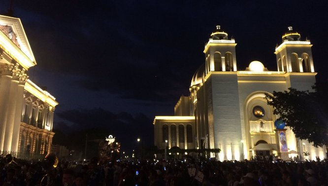
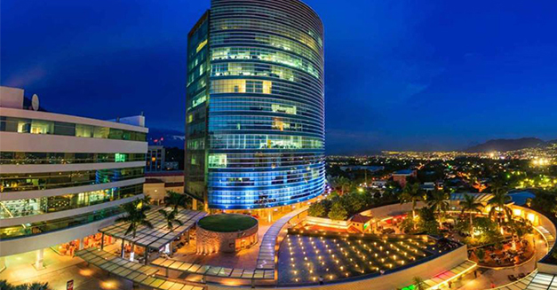

San Salvador es uno de los 14 departamentos de El Salvador ubicado en la zona central. Su área es de 886,15 kilómetros cuadrados y su población es de 2 557 761 habitantes.
San Salvador es la capital de la República de El Salvador y la cabecera del departamento y municipio homónimos. Como capital de la nación, alberga las sedes del Gobierno y el Consejo de Ministros de El Salvador, Asamblea Legislativa, Corte Suprema de Justicia y demás instituciones y organismos del Estado, así como la residencia oficial del Presidente de la República. Es la mayor ciudad del país desde el punto de vista económico y demográfico, y asiento de las principales industrias y empresas de servicios de El Salvador.
La primera fundación de San Salvador tuvo lugar en 1525, se refundó en 1528, pero su población estaría asentada en su emplazamiento actual hasta en 1545. Fue un importante centro comercial durante la colonización española, debido a la agricultura del añil, y se convirtió en sede de la Alcaldía Mayor, Intendencia y la Provincia del territorio que, en su mayor parte, hoy conforma El Salvador.
Su actividad turistica depende por la noche
Para el disfrute de la vida nocturna en esta capital existe una variada oferta de restaurantes, discotecas y bares. Para el caso, hay zonas identificadas que concentran estos centros de esparcimiento: la Zona Rosa, al Oeste, sobre el Bulevard del Hipódromo; la Zona Real, ubicada en los alrededores del Bulevar de los Héroes; y el Paseo General Escalón. Cabe destacar que algunos de estos contornos están comprendidas dentro de las áreas donde no es permitida el porte de armas de acuerdo a una ley de la república.
Los espectáculos musicales multitudinarios se realizan en los grandes recintos deportivos como el Gimnasio Nacional, el Estadio Cuscatlán, o el anfiteatro del Centro Internacional de Ferias y Convenciones. Otra opción es la segunda estructura más alta del país: la Torre Futura, que alberga oficinas y área comercial.
